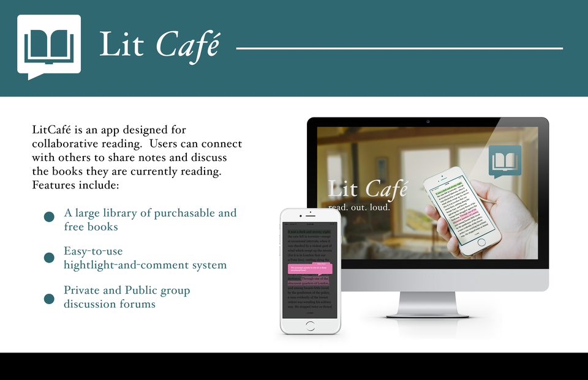

Litcafe
This is an app concept I came up with as part of one of my classes. The app would part of a larger social media platform that allows users to establish reading groups, where they can then make notes on the text and have group discussions.
The idea for this app came about because I was having trouble finding time to read. I figured that if I was reading with a group and had a place to discuss what I read, I would have an incentive to keep reading.
The documents were made in a combination of Adobe Photoshop and Illustrator. I used Illustrator to create the icon. I wanted to emphasize the idea of talking about books, so the icon is simply a book in a speech bubble. The mockups were made in Photoshop and are based on the standard iOS layout. I wanted it to feel like a traditional reading app. The comment system works similar to Google Docs, in which a User can highlight a piece of text and have that be seen by everyone in the group. The User can also add a comment to this highlight, and is only displayed when the user taps it. The group chat function is similar to the format of the several messaging apps available on the market.
 back to projects